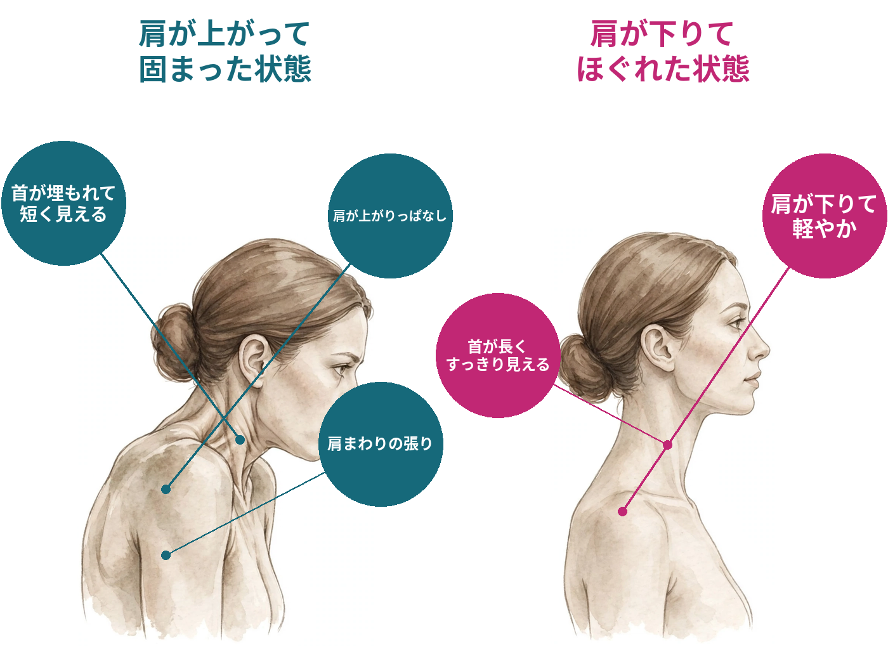

肩こり
美容整体ステラ・ポラリス東三国｜大阪市淀川区東三国・東三国駅徒歩5分・女性向け

上がりっぱなしの肩を下ろして、軽やかな首・肩へ
肩こりは、女性のお悩みの中でもとくに多いものの一つです。デスクワークやスマートフォン、家事や育児で同じ姿勢が続くと、肩を持ち上げる筋肉が働きっぱなしになり、夕方には肩が重く、首までガチガチに感じるようになります。肩こりは姿勢のクセと筋肉の使い方の偏りが重なって起こると言われています。このページでは、肩こりの背景にある仕組みと、肩が下りて軽く感じられる状態を目指す当サロンでのケア、ご自宅でできるセルフケアをご案内します。まずは下のチェックで、ご自身の状態を確かめてみてください。
ご予約はこちら（Coubic）こんなお悩みありませんか
- 夕方になると肩が重く、頭まで重だるく感じる
- 肩を触ると、岩のように固く盛り上がっている
- 無意識に肩が上がっていて、力を抜けない
- デスクワークのあと、首や肩を回したくなる
- 肩こりから、目の疲れや頭の重さを感じることがある
- マッサージを受けても、数日で元の固さに戻る気がする
- 寒い日や忙しい日は、とくに肩がこりやすい
当てはまる項目が多いほど、肩を持ち上げるクセと姿勢の偏りが積み重なっている目安とされています。肩こりは「揉むだけ」ではなく、肩が上がる仕組みそのものを見直すことが大切です。次のセルフチェックで、肩の上がり具合の傾向を確かめてみましょう。
簡単セルフチェック（肩の上がりチェック）
鏡の前に立って、肩の位置を確かめる簡単な方法です。
- 鏡の前に自然に立ち、力を抜いて両肩のラインを見ます。
- 左右の肩の高さに差がないか、耳と肩の距離が短くなっていないかを確認します。
- 肩が耳に近づいている、肩先が前に出ている場合は、肩を持ち上げる筋肉が働きっぱなしになっている目安と言われています。
※これは診断ではありません。ご自身の状態の傾向を知る目安としてお使いください。
肩こりの原因と仕組み
肩を持ち上げる筋肉「僧帽筋」
肩こりの中心になるのは、首から肩、背中へ広がる僧帽筋という大きな筋肉です。頭の重さを支え、腕を吊り下げる役割があり、姿勢が崩れるほど負担が増えます。パソコン作業で画面をのぞき込む姿勢が続くと、僧帽筋の上の部分が縮んだまま固まりやすく、肩が上がったまま下りなくなることがあります。図1のように、肩の位置ひとつで首の長さの見え方や、肩まわりの軽さの感じ方が変わってきます。

図1 肩が上がった状態で起こりやすい変化と、肩が下りてほぐれた状態のイメージ。体の状態には個人差があります。
姿勢と血の巡り
筋肉は、縮んだ状態が続くと内部の血の巡りが滞りやすくなると言われています。巡りが滞ると、だるさや重さを感じるもとが溜まりやすく、さらに筋肉が固まるという循環に入りがちです。肩が前に出る姿勢では胸まわりも縮み、肩甲骨の動きも小さくなるため、肩だけでなく背中側まで重く感じることがあります。
寒さ・ストレスと肩の力み
寒さで体が縮こまるときや、緊張が続く場面では、無意識に肩に力が入りやすくなります。家事や育児で前かがみの姿勢が多い方も、肩を持ち上げる筋肉に負担が集中しがちです。肩こりは一つの原因ではなく、姿勢・巡り・力みの重なりで起こるものと捉えると、ケアの方向性が見えてきます。
女性に多い背景
女性は男性に比べて首や肩まわりの筋肉量が少なく、同じ頭の重さを支える負担が大きいと言われています。冷えやすい体質や、バッグを片側の肩にかけ続ける習慣も、肩こりの一因になります。クセに気づいて整えていくことが、肩の軽さを保つ土台になります。
セルフケアで足りる場合・サロンケアが向く場合
肩の重さが軽く、肩回しやストレッチをしたあとにすっと軽く感じる日が多い場合は、まずご自宅でのセルフケアを続けて様子を見る方法があります。一方で、肩が岩のように固く自分ではゆるめにくい、肩が上がるクセそのものを直したい、首や背中まで広く重さを感じるという場合は、サロンでのケアが向いている目安になります。サロンでは、ほぐしと美容整体を組み合わせて、施術後に「肩が下りた」「首が長く感じる」と感じやすい状態を目指します。どちらが正解というものではなく、今の状態に合わせて選ぶことが大切です。
当サロンでのケア
当サロンの肩こりケアは、「肩が下りて、首がすっと伸びる感覚」を目指す組み立てです。まず肩の上がり具合と姿勢のクセを一緒に確認し、部位と目的に合わせて3つの手技を組み合わせます。
美容整体：肩の位置と背骨のラインを整え、肩が下りやすい姿勢の土台をつくることを目的に。肩甲骨の動きを引き出し、まっすぐ立つ感覚を取り戻すお手伝いをします。
アロマオイルマッサージ：僧帽筋から首すじ、肩甲骨まわりをオイルでゆるめ、巡りが流れやすい状態を目指します。香りに包まれながらほぐれる、リラックス感の高いケアです。
もみほぐし：固く盛り上がった肩の上部や、ガチガチになりやすい首の付け根をほぐし、重だるさが抜けていく感覚を目指して進めます。
ケアを通して目指すのは、こんな変化です。
- 肩が下りて、首が長くすっきり見える姿勢へ
- 肩まわりの重だるさがやわらぎ、腕が回しやすい感覚へ
- 首すじまでゆるんで、頭が軽く感じる状態へ
- 肩甲骨まわりが動きやすくなり、背中まで軽く感じる状態へ
- 力を抜く感覚が分かり、日常でも肩を下ろしやすい状態へ
施術の仕上げには、肩を下ろすコツと、デスクワークの合間にできる簡単なほぐし方もお伝えします。肩が下りた姿勢の心地よさを知ることが、日常の姿勢を見直すきっかけになります。強さは途中でも調整できますので、遠慮なくお声がけください。

施術の流れ
ご来店後、気になる部位やお悩み、ご希望の強さなどをうかがいます。完全個室のため、周りを気にせずお話しいただけます。
肩の上がり具合や首の動き、姿勢のクセなどを一緒に確認し、その日の状態に合わせた施術の進め方をご案内します。
美容整体を中心に、ご希望に応じてアロマオイルマッサージ、もみほぐしを組み合わせて進めます。強さは途中でも調整できます。
施術後の状態を確認し、ご自宅で続けやすいセルフケアのポイントをお伝えします。次回の目安についても、ご希望があればご案内します。
料金
| コース | 通常価格 | キャンペーン価格（12/25まで） |
|---|---|---|
| 80分 | 8,000円 | 3,000円 |
| 100分 | 10,000円 | 4,000円 |
| 120分 | 12,000円 | 5,000円 |
クリスマスキャンペーンは12月25日まで、ご新規様もリピーターの方も対象です。施術内容は当日の状態とご希望に合わせて組み立てます。
ご自宅でできるセルフケア
- 肩の上げ下げ体操：両肩を耳に近づけるように上げて5秒キープし、ストンと下ろします。5回を1セットとして、仕事の合間に取り入れるのが目安です。
- 肩甲骨回し：指先を肩に置き、肘で大きな円を描くように前回し・後回しを各10回。肩まわりの巡りを促すつもりで、ゆっくり行ってください。
- 胸を開くストレッチ：ドアの枠に前腕をつけ、体を少し前に傾けて胸の前を伸ばします。左右20〜30秒を2セット、痛みのない範囲で行います。
- 温める習慣：蒸しタオルを首の付け根に当てる、湯船に肩まで浸かるなど、温めて巡りを助ける習慣も肩の重さ対策になります。
ご自宅でのケアに：セルフケア資料ライブラリ（無料）
このお悩みに合わせたセルフケアの考え方を、無料の資料ライブラリでご紹介しています。
セルフケア資料ライブラリを開く →
受診の目安
肩こりに加えて、腕や手のしびれ・力が入りにくい感じがある場合や、発熱を伴う首の痛み、転倒などのあとに始まった痛みがある場合は、施術の前に医療機関への受診をおすすめします。痛みが日ごとに強くなる場合も、まずは医療機関でご相談ください。
よくある質問
Q. 初めてでも大丈夫ですか？
はい。当サロンは完全予約制・完全個室で、1日3組までのご案内です。最初にカウンセリングで肩の状態や姿勢のクセをうかがい、無理のない内容から始めます。施術の前後で「肩が下りた」「首が伸びた感じがする」といった感覚の違いを一緒に確認しながら進めますので、初めての方も安心してご利用いただけます。
Q. 施術は痛いですか？
強さは、ご希望をうかがいながら調整します。固い肩を無理に押しほぐすのではなく、お身体の状態に合わせた圧で、コリがゆるんでいく感覚を味わいながら受けていただけます。感じ方には個人差がありますので、施術中も遠慮なくお声がけください。
Q. コースはどう選べばいいですか？
80分・100分・120分のコースがあり、ケアしたい部位の広さやお時間のご都合に合わせて選べます。肩こりのケアで首から肩、背中、腕までゆっくりほぐしたい方には、100分が選ばれることが多いコースです。迷われる場合は、ご予約の際にお気軽にご相談ください。
Q. 場所と予約方法を教えてください。
大阪市淀川区東三国、東三国駅から徒歩5分です。完全予約制のため、予約サイト（Coubic）またはLINE公式アカウントからご予約をお願いしています。
Q. 男性も受けられますか？
当サロンは女性向けのため、男性の方は、同じ東三国の男性専用整体院「北辰堂」をご案内しています。
施術者について
平賀建人（施術歴30年）
鍼灸師・登録販売者・アロマセラピスト・パーソナルトレーナーの資格を持ち、美容整体を中心に、アロマオイルマッサージ、もみほぐしを、その日の状態とご希望に合わせて組み合わせて施術します。このページの内容は、施術者の知識と経験をもとに作成しています。

料金・ご予約
ご新規様もリピーターの方も 12/25まで
80分 3,000円／100分 4,000円／120分 5,000円
通常価格は80分8,000円／100分10,000円／120分12,000円です。施術内容はご希望に合わせて組み立てます。
営業時間：月〜土 17:00〜23:00／日 10:00〜23:00（完全予約制）｜電話：080-2468-3086
大阪府大阪市淀川区東三国2丁目25番4号101（東三国駅徒歩5分）